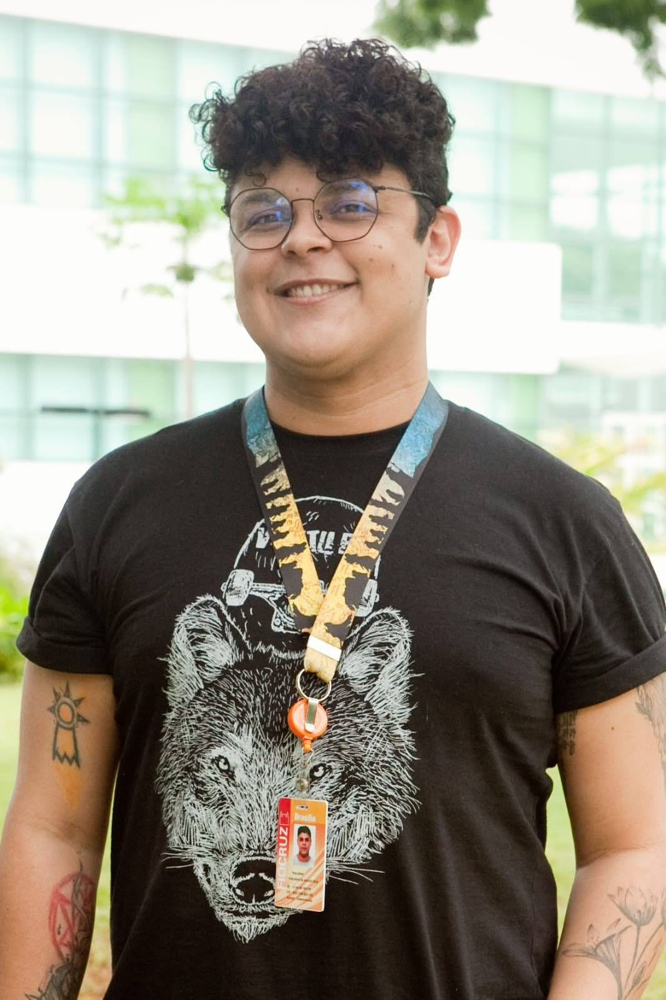

Transformo fluxos confusos em experiências claras — conectando UX Research, arquitetura da informação, design de interface, automação e pensamento sistêmico.
Os cases abaixo mostram minha atuação em diferentes níveis: interface e arquitetura de informação, redesenho de sistema organizacional e automação com IA aplicada a um gargalo real.
Reestruturação da experiência do ambiente virtual de aprendizagem para reduzir fricção, melhorar navegação e aumentar autonomia do aluno.
Mapeamento e estruturação de um sistema complexo de produção educacional, conectando UX, DesignOps, Design Instrucional e IA aplicada.
Criação colaborativa de um agente de IA para automatizar a formatação de bancos de questões, reduzindo uma operação crítica de semanas para minutos.
Meu trabalho parte da leitura do sistema: usuários, regras, fluxos, gargalos e decisões. A interface é consequência de uma estrutura clara — não o ponto de partida.
Entender a experiência real, seja do aluno, do colaborador ou da equipe que opera o processo.
Organizar informação, fluxos e decisões antes de propor qualquer camada visual ou tecnológica.
Usar design e IA para reduzir esforço, aumentar clareza e tornar sistemas mais sustentáveis.

Sou Thalisson Cruz, UX/Product Designer com experiência em educação digital, arquitetura da informação, interfaces e IA aplicada a processos. Atuo na interseção entre experiência do usuário, operação e tecnologia.
Meu foco é transformar ambientes complexos em sistemas mais claros, utilizáveis e escaláveis — sempre conectando contexto, pesquisa e decisão de design.
Ler sobre mim